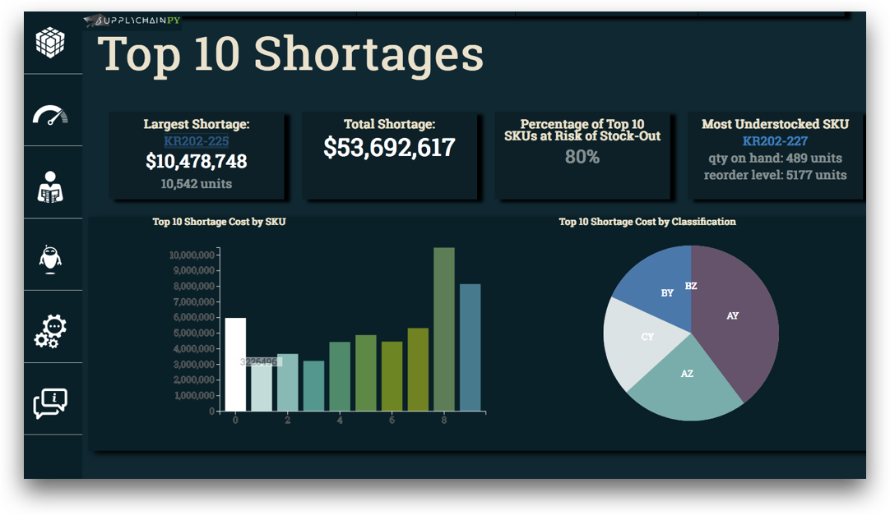
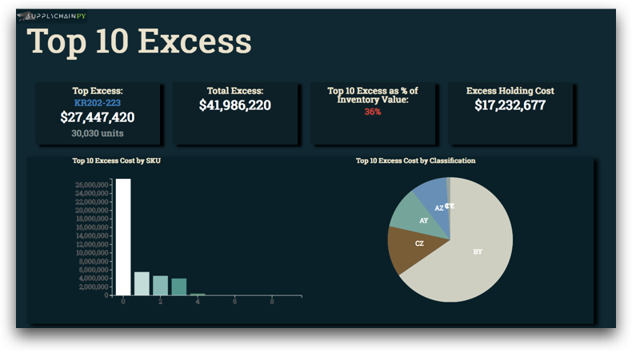
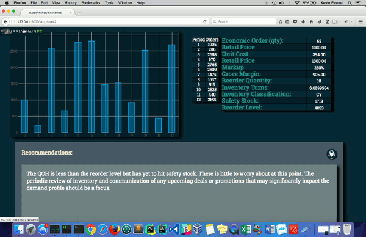

Supplychainpy Reporting Suite¶
To further indicate the merit of the library in a more direct way and showcase the possibilities offered, release 0.0.4 debuts a reporting feature. The supplychainpy reporting feature allows analysts to get a quick overview of their analysis and provides a tool for communicating their insights very quickly. The reports bring some of the data analysis capabilities of the library to life with a complimentary suite of charts, tables, KPIs and an interactive Bot.
The reports aim to:
- provide the ability to visualise data and spot trends, allowing analysts to get a “feel” for their data.
- provide a set of generic default reports, to showcase some general uses cases and highlight the capabilities of the library.
- identify areas of interest for further exploration.
Launch from Cli¶
The command line arguments can be viewed using the –help flag. There are several options for launching the reports. Using the the reporting function generates a sqlite database called reporting. To process a CSV file and initiate the reporting suite directly after, navigate to a directory suitable for storing the CSV and resulting database. Use the following commands:
Linux and Mac
supplychainpy filename.csv -a -loc ~/absolute/path/to/current/directory -l -cur EUR
Windows
supplychainpy filename.csv -a -loc drive:\absolute\path\to\current\directory -l -cur EUR
Importantly the the currency flag (-cur) if unspecified will default to USD. Other optional arguments include the host (–host default: 127.0.0.1 ) and port (-p default: 5000) arguments. Setting the host and ports allows the -l arguments can be replaced by the -lx. The -l arguments launch a small intermediary GUI for setting the port before launching the reports in a web browser. The -lx argument start the reporting process but does not launch a GUI or a browser window and instead expects the user to open the browser and navigate to the address hosting the reports as specified in the CLI.
Reporting Suite Walk Through¶
The reporting suite launches on the ‘Dashboard’ page. The Dashboard is split into three section: Classification Breakdown, Top 10 Shortages and Top 10 Excess. The Dashboard hosts three toggle switches at the top of the screen for toggling each section in and out of view.
Navigation¶
The Navigation panel is hidden to the left of the browser and can be toggled into view by clicking on the ‘supplychainpy’ logo icon.
| Icon | Description |
|---|---|
| The analysis icon navigates to the pages hosting the raw analysis data in tabular form. | |
| The dashboard icon navigates to the pages hosting the top level summary of the inventory profile. | |
| The news feed icon navigates to the pages hosting the recommendations feed. | |
| The bot icon navigates to the pages hosting the chat bot, for interrogating the data using natural language. | |
| The contact icon navigates to a page containing the projects contact details. |
The Head up Display (HUD)¶
The reports use what we like to refer to as a “Heads up Display” (HUD) to highlight key values and KPIs. As seen below, the HUD is a row of boxes (Slates), that sits on top of the main charts, analysis and tabular breakdowns.

Classification Breakdown¶
The classification breakdown summarises the Inventory Profile using Pareto and variance analysis, to indicate the contribution the SKU makes to revenue and the variability in demand respectively. This section shows which classification has the largest excess and shortage as well as breaking down revenue, shortages and excess by category.

Top 10 Shortages¶
This section indicates which 10 SKUs are responsible for the most shortages.
Top 10 Excess¶
This section indicates which 10 SKUs are responsible for the most excess stock based on their unit cost.
Analysis Cube¶
The analysis cube page hosts the tabulated data for all data points within the analysis.

Dash the Bot¶
The Chat Bot provides a simply method of querying the analysis using natural language.

Recommendations Feed¶
The recommendation feed for all the auto-generated recommendation for each SKU.
